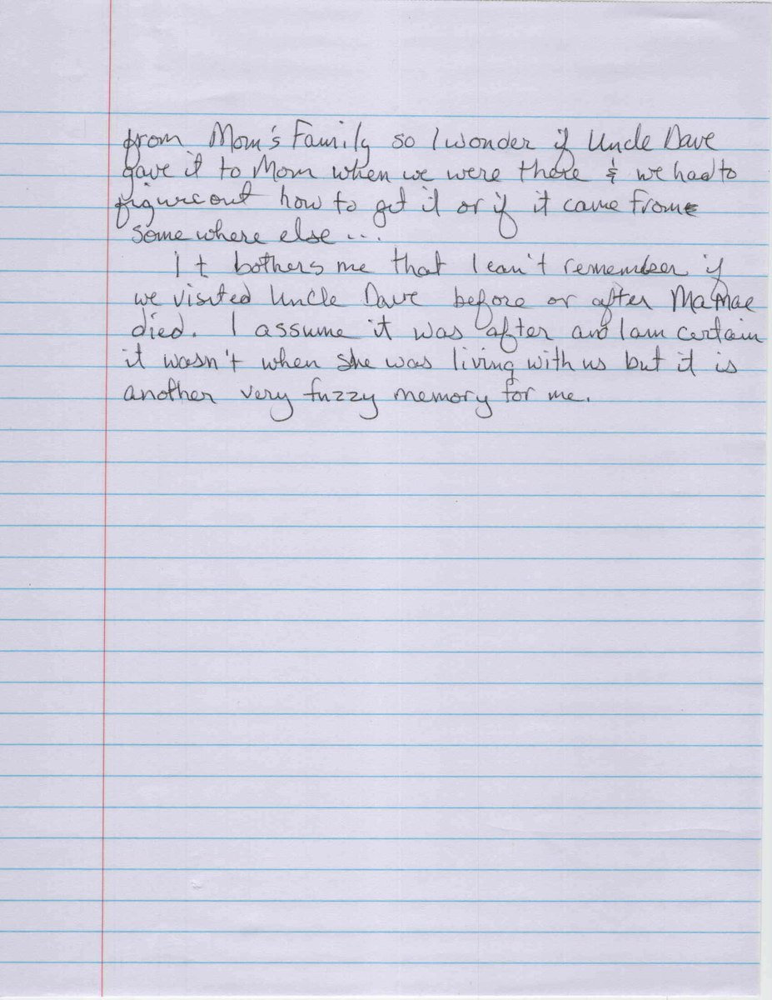

Now read the afternoon again.
A tidy older house. A nineteen-fifties car in the driveway. A thin man with a warm smile, plainly fond of our mother — and he had reason to be, because she was the granddaughter of his brother Walter, and he had known her mother, Virginia Mae, since she was a girl.
Two children in his front room. My sister was eleven. I was twelve. We stood with our mother in front of the fireplace and talked.
I asked about poison gas, because I was twelve and that was what I knew about the First World War. It was the sort of thing a boy asks.
He answered. Briefly, and kindly. He told me he had been gassed. He said nothing about a hole in his head at Nantillois on the fourth of October, or about the four days of shelling before it, or about being carried out of it, or about seventy-six days in a hospital in the Nièvre.
I did not ask whether he had gone alone.
It would not have occurred to me. Nobody had ever mentioned a brother. My sister remembers only that he had been wounded in the war; I remember only gas. Between the two of us, aged eleven and twelve, we had the whole of what that family had told its children about October 1918.
Before we left he gave our mother several family items. A water pitcher, tall and graceful and possibly silver-plate or pewter. Some crockery. A butter pat.
… the butter pat that mom kept in her bread bowl. Jodie Sweat, 22 August 2026
He was seventy-six. He was giving the family’s things to the family — to a young woman who was his brother Walter’s granddaughter, and the daughter of the niece he had watched grow up — and he did it while two children stood about in the room being bored in the way children are.

He died in August 1973, about three years after that afternoon. I was fifteen.
Everything in this account — the draft cards, the passenger lists, the morning report, the burial cards, the plat with the cross in the field, Sergeant Walker’s one sentence about a chest wound — came out of archives fifty years later, because I went looking. None of it came from him. He had it all, and he was standing right there, and I asked him about gas.
The eldest brother stayed home. Walter Newton Bryant claimed exemption on 5 June 1917 as a family man with a wife and two children, and it was allowed. His daughter Virginia Mae — Ma Mae — was my grandmother, and her daughter was my mother, and that is how two children came to be standing in that room at all.
Three brothers registered at the same table on the same morning. Two of them went, and one of those two did not come back. The third stayed in Virginia, farmed, ran a saw mill, raised his children, buried his youngest brother in 1921, and died at Brookneal in 1945 without, so far as any record here shows, ever saying a word about it either.
Be thou at peace.